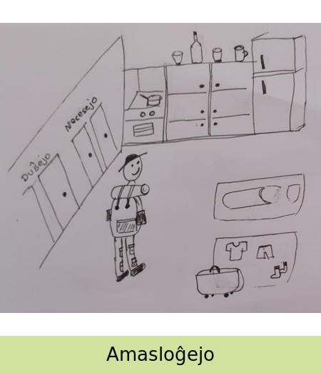

- 1 kaserolo staras sur la forno
- maldekstre estas fridujo / frostulo
- Valizo staras la plej malsupre de la bildo
- Sur la pantalono estas 4 poŝoj
- Ni vidas 1 t-ĉemizon
- La viro ridetas
- Minimume 7 ansoj
- Duŝeja estas je la pej maldekstra parto de la desegno
- 1 forno disponeblas en ka kuirejo
- La viro portas ĉapelon